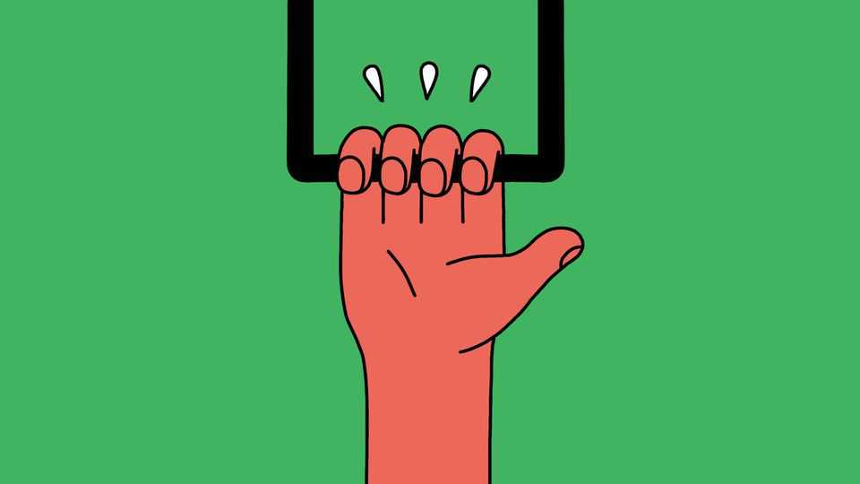

Is grip strength a useful indicator of health?
It is an attention-grabbing claim

Nov 12th 2026
“Get a grip” goes the idiom. Lately, the fashion for exercises including “dead hangs” and “farmer’s carries”, and for squeezing hand grippers, suggests that some are taking the advice literally.
The likely trigger was a headline-grabbing study in the Lancet in 2015 that associated grip strength with longer life. Following 139,691 people in 17 countries for an average of four years, the researchers linked every 5kg decrease in grip strength with a 16% higher risk of death from any cause. For cardiovascular death, the figure was 17%. Grip strength, they found, was a better predictor of both than systolic blood pressure.
Alas, regular grip exercises alone are unlikely to lengthen your life. They may, however, be a good way of monitoring your overall health. Muscles, notes Brian Clark, a physiologist at Ohio University, are “puppets” at the end of a neurological chain of command. To generate force, electrical signals must be continuously generated by the brain and transmitted to the muscles by nerves. If any part falters, strength suffers.
What makes a squeeze especially revealing is its complexity. To produce a firm grip, the brain must co-ordinate a system of 39 muscles controlling the hand and wrist. Such orchestration is neurologically taxing, which helps explain why fingers clenching together produce less force than the sum of what each can muster alone. Tellingly, in a small experiment with older people, published in 2024 in Ageing Clinical and Experimental Research, this shortfall in force was greater among participants with lower scores on a cognitive test.
This raises another intriguing possibility. A weakening grip, says Ivan Bautmans, a researcher on ageing at Vrije University in Brussels, can also foreshadow cognitive decline. Dr Bautmans believes that easy and inexpensive strength tests could provide a valuable early warning. Consider a meta-analysis he co-wrote, published in June in Neuroscience & Biobehavioural Reviews, that examined 60 observational studies involving around 380,000 people. Across studies with follow-up periods ranging from one to 22 years, participants with stronger grips were 19% less likely to experience cognitive decline.
Grip asymmetry may be another useful measurement. Having a dominant hand that is roughly 10% stronger than the weaker hand is common, but larger gaps can be telling. A meta-analysis published in April in Archives of Gerontology and Geriatrics pooled nine cohort studies involving around 900,000 people, some followed for many years. Participants whose hands differed markedly in strength had a 29% higher risk of death from cardiovascular disease, perhaps because problems with the nervous system can also impair control of the heart and blood vessels. Comparing both hands, the researchers argue, can reveal subtle neuromuscular problems that testing just one might miss.
The brain’s division of labour may be responsible. Each hand is chiefly controlled by the brain’s opposite hemisphere, and neurological deterioration often progresses unevenly. This can produce a striking imbalance. When one hand weakens to half the strength of the other, Dr Bautmans warns, that decline may be accelerating.
A word of caution is in order: a weak or lopsided grip is no diagnosis. It can, though, suggest that further checks are warranted. As for enthusiasts for grip exercises, research has shown resistance training of muscles across the body can help keep the mind sharp. Hang in there. ■
After a free, evidence-based guide to health and wellness? Sign up to our weekly Well Informed newsletter.